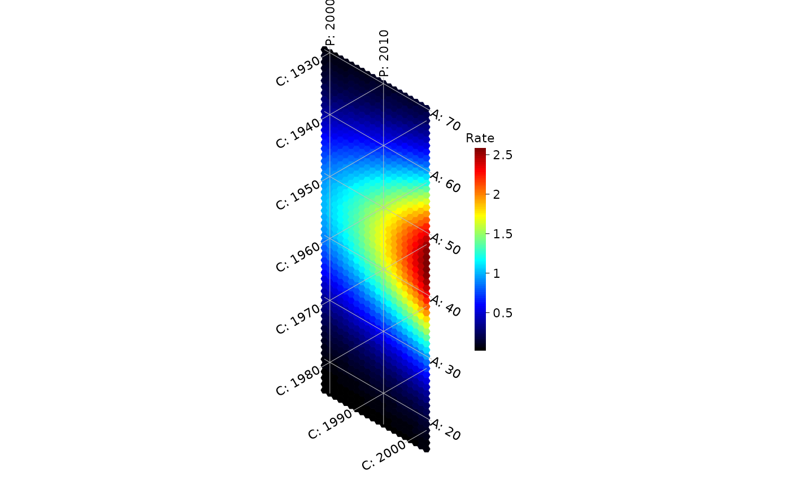
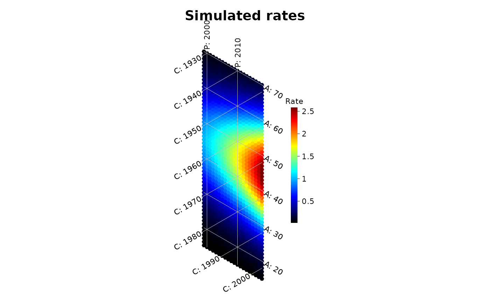
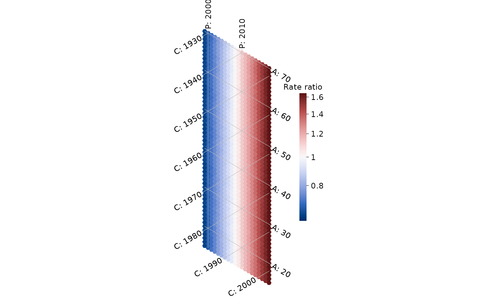
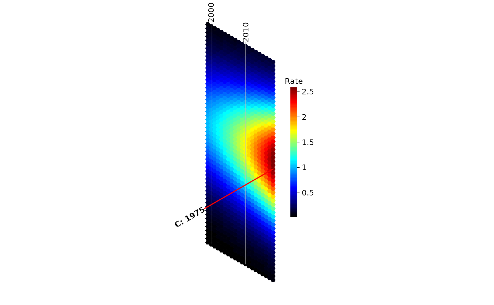

Draws a field of hexagonal tiles, one per age-period cell, with age,
period and cohort isolines at equal 60 degree angles, plus a colorbar.
Each tile is centered at \(x = p\sqrt{3}/2\) and \(y = a - p/2\), so
neighboring tiles are one interval apart along every APC axis.
Usage
hexamap(
data,
first_age = NULL,
first_period = NULL,
interval = NULL,
first_age_isoline = NULL,
first_period_isoline = NULL,
isoline_interval = NULL,
colorbar_range = NULL,
colorbar_scale = "linear",
colorbar_width = 0.15,
colorbar_height = 0.5,
title_text = NULL,
subtitle_text = NULL,
title_adj = 0.5,
color_map = NULL,
palette = NULL,
n_colors = 100,
midpoint = NULL,
isolines = c("age", "period", "cohort"),
labels = c(age = "A: ", period = "P: ", cohort = "C: "),
highlight = NULL,
line_width = 0.5,
line_color = "grey",
label_size = 0.7,
label_color = "black",
scale_units = "Rate",
legend = TRUE,
na_color = "grey90",
na_label = "Missing",
hex_border = "fill",
hex_border_width = 0.5,
zoom_factor = NULL,
wrap_cohort_labels = TRUE,
tiles = c("hexagon", "square")
)Arguments
- data
Numeric matrix (or data frame of numeric columns) with ages as rows and periods as columns. Missing and non-finite cells are not drawn.
- first_age
First age in
data. Defaults to the first row name ofdata, if numeric.- first_period
First period in
data. Defaults to the first column name ofdata, if numeric.- interval
Width of the age and period groups, which must be equal. Defaults to the spacing of the numeric row or column names of
data, or 1.- first_age_isoline, first_period_isoline
First age and period at which to draw an isoline. Default to the first age and period in the data that are multiples of
isoline_interval(e.g. 20 and 2000 for data starting at age 15 in 1999 with isolines every 10 years).- isoline_interval
Spacing between isolines. Defaults to the smallest round value (1, 2, 5, 10, 20, 25, 50, ...) that is a multiple of
intervaland gives at most 8 isolines.- colorbar_range
Numeric vector of length 2 with the lower and upper limits of the color scale. Values outside are truncated. Defaults to the range of
data.- colorbar_scale
How colors are mapped to values:
"linear","log"or"quantile"(each color covers the same share of cells). The names"Normal"and"Percentile"used in earlier versions are also accepted.- colorbar_width
Width of the colorbar, in inches.
- colorbar_height
Height of the colorbar, as a fraction of the height of the hexamap.
- title_text, subtitle_text
Title and subtitle, drawn above the hexamap.
NULLor""for none.- title_adj
Horizontal alignment of the title and subtitle: 0 for left, 0.5 for centered, 1 for right.
- color_map
Vector of colors from low to high. Overrides
palette.- palette
Name of a palette passed to
hexamap_palette(), used whencolor_mapisNULL. Defaults to"jet", the palette of Jalal and Burke (2020), or to the diverging"Blue-Red 3"whenmidpointis set."viridis"is a perceptually uniform alternative that is readable by people with color vision deficiencies.- n_colors
Number of colors taken from
palette.- midpoint
Value at the center of a diverging color scale, such as 1 for rate ratios on a log scale or 0 for differences. The color limits are made symmetric around it.
- isolines
Which isolines to draw: any of
"age","period"and"cohort", orNULLfor none.- labels
Named character vector with the prefixes of the
age,periodandcohortisoline labels. Missing names keep their default, solabels = c(period = "Year: ")only changes the period labels.- highlight
List of ages, periods and/or cohorts to draw as highlighted lines, with optional
colandlwd, e.g.list(cohort = 1975)orlist(age = c(30, 50), col = "white", lwd = 2). Values need not be isolines but must be within the range of the data. Their labels are drawn in bold.- line_width, line_color
Width and color of the isolines.
- label_size, label_color
Size and color of the isoline and colorbar labels.
- scale_units
Text displayed above the colorbar.
- legend
Logical; whether to draw the colorbar.
- na_color
Color of cells with missing values (for example, suppressed counts).
NAleaves them blank.- na_label
Label of the missing-value key shown below the colorbar when some cells are missing.
- hex_border
Color of the hexagon borders. The default,
"fill", draws each border in the hexagon's own color, which avoids the thin white seams that many viewers show between adjacent tiles. UseNAfor no border, or a color such as"white"to outline the tiles.- hex_border_width
Line width of the hexagon borders.
- zoom_factor
Deprecated and ignored: hexamaps now fit the plotting region.
- wrap_cohort_labels
Logical; whether cohort labels wrap around the bottom edge of the hexamap.
- tiles
"hexagon"for a hexamap or"square"for a traditional Lexis diagram; seelexis_map().
Value
The hexamap_layout object returned by hexamap_layout(),
invisibly.
Details
hexamap() is hexamap_layout() followed by
plot(). The hexamap is scaled to fit the current
plotting region, so several hexamaps can be combined with
par(mfrow = ). Use apc_to_xy() to add annotations.
References
Jalal H, Burke DS. Hexamaps for age-period-cohort data visualization and implementation in R. Epidemiology. 2020;31(6):e47-e49. doi:10.1097/EDE.0000000000001236
Examples
ages <- 15:70
periods <- 1999:2018
rates <- outer(ages, periods, function(a, p) exp(-((a - 45) / 15)^2 + (p - 1999) / 20))
hexamap(rates, first_age = 15, first_period = 1999, interval = 1,
isoline_interval = 10)

# ages and periods can also come from the dimnames
dimnames(rates) <- list(ages, periods)
hexamap(rates, isoline_interval = 10, title_text = "Simulated rates")

# a diverging scale for rate ratios relative to 2008
ratios <- rates / rates[, "2008"]
hexamap(ratios, colorbar_scale = "log", midpoint = 1,
scale_units = "Rate ratio")

# period isolines only, labeled by year, with the 1975 cohort highlighted
hexamap(rates, isolines = "period", labels = c(period = ""),
highlight = list(cohort = 1975))
